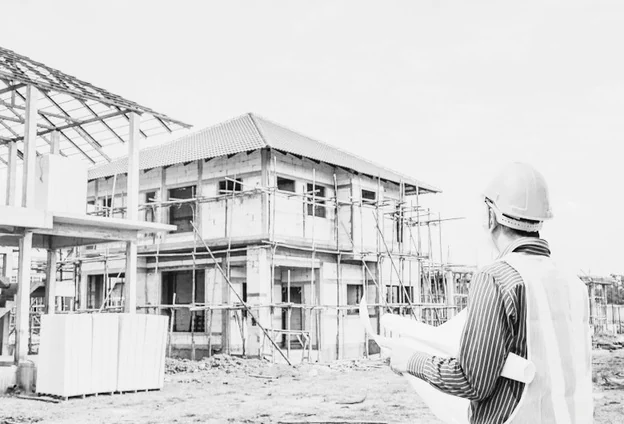

Presisi
Memperhatikan setiap detail pekerjaan.
Profesionalisme, integritas, dan koordinasi adalah bagian dari cara kami membangun.
CV Global Sinergi Nusantara adalah perusahaan konstruksi dan infrastruktur yang berkomitmen menghadirkan solusi pembangunan berkualitas tinggi.
Berlandaskan profesionalisme, perusahaan mengembangkan kemampuan untuk menangani kebutuhan hunian, komersial, dan infrastruktur dengan koordinasi pada setiap tahap pekerjaan. Fokus kami adalah memastikan pelaksanaan berjalan sesuai dengan perencanaan serta standar yang telah ditetapkan.

GSN — COMPANY PROFILETerpercaya, inovatif, dan berdampak nyata bagi masyarakat serta pembangunan nasional.
Memperhatikan setiap detail pekerjaan.
Menjaga kepercayaan dalam setiap proyek.
Membangun koordinasi yang solid.
Menyelesaikan pekerjaan secara profesional.